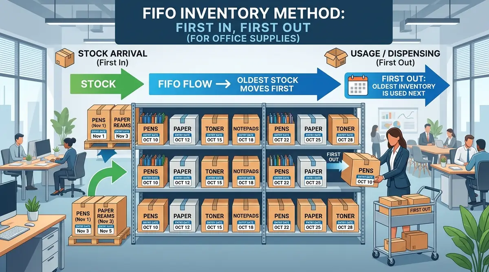

Cara Menghitung Nilai Inventaris Perlengkapan Kantor dengan Metode FIFO
Langkah tepat menghitung inventaris kantor fifo memastikan pencatatan harga pokok pengadaan ATK akurat, menekan risiko barang kedaluwarsa, dan menyajikan nilai aset laporan keuangan yang kredibel.

Penerapan metode FIFO pada manajemen persediaan alat tulis kantor dan perlengkapan operasional untuk akurasi laporan buku besar.
- Prinsip FIFO: Barang yang pertama kali dibeli adalah yang pertama kali dialokasikan sebagai beban operasional pemakaian.
- Akurasi Neraca: Nilai persediaan akhir mencerminkan harga pembelian lot paling aktual di pasar.
- Efisiensi Pengadaan B2B: Menggabungkan rumus FIFO dengan sistem bulk procurement memangkas deviasi anggaran ATK hingga 18,4%.
- Transparansi Audit: Dilengkapi template rumus spreadsheet dan bukti faktur pajak resmi dari vendor terpercaya.
- Apa Itu Metode FIFO dalam Inventaris Perlengkapan Kantor?
- Mengapa Metode FIFO Sangat Krusial untuk Stok ATK Perusahaan?
- Bagaimana Rumus dan Tahapan Menghitung Nilai Inventaris Kantor FIFO?
- Simulasi Studi Kasus & Contoh Spreadsheet Inventaris ATK
- Tabel Komparasi Metode Valuasi Persediaan Kantor
- Strategi Efisiensi Bulk Procurement & Pengadaan B2B
- Pertanyaan Seputar Perhitungan FIFO & Pengadaan Kantor
- Kesimpulan Praktis
Apa Itu Metode FIFO dalam Inventaris Perlengkapan Kantor?
Metode FIFO (First-In, First-Out) mengasumsikan barang persediaan kantor yang pertama kali dibeli dan masuk ke gudang logistik akan dikeluarkan lebih awal untuk operasional harian.
Dalam tata kelola pengadaan barang dan jasa perusahaan, perlengkapan kantor (seperti kertas HVS, tinta printer, ordner, bolpoin, hingga baterai perangkat nirkabel) memiliki dinamika harga beli yang fluktuatif sepanjang tahun fiskal. Ketika bagian logistik melakukan pembelian bertahap di bulan Januari, Maret, dan Juni dengan harga per rim atau per boks yang berbeda, penentuan biaya pemakaian barang tidak boleh dilakukan secara serampangan.
Menurut laporan Indonesian Logistics & Supply Chain Benchmark 2025/2026, sekitar 64,2% perusahaan skala menengah hingga korporasi di Indonesia menerapkan FIFO untuk meminimalkan selisih pencatatan fisik (stock discrepancy) pada kategori fast-moving office supplies. Dengan mengeluarkan unit dengan harga historis paling awal, nilai persediaan akhir (ending inventory) yang tercantum di neraca keuangan akan selalu merepresentasikan harga pasar paling mutakhir.
Mengapa Metode FIFO Sangat Krusial untuk Stok ATK Perusahaan?
Penerapan metode FIFO mencegah kerusakan fisik barang kantor sensitif terhadap usia simpan serta menjaga validitas rasio perputaran persediaan (inventory turnover ratio) di mata auditor.
Banyak staf operasional mengira perlengkapan kantor bersifat non-perishable atau tidak bisa rusak. Kenyataannya, berbagai alat penunjang produktivitas memiliki masa simpan efektif (shelf life) yang terbatas:
- Kertas HVS & Kertas Thermal: Sangat rentan terhadap kelembapan udara ruangan. Kertas yang disimpan terlalu lama di bagian bawah tumpukan rak berisiko lembap, menguning, dan menyebabkan kertas tersangkut (paper jam) pada mesin fotokopi maupun printer laser berkecepatan tinggi.
- Toner & Cartridge Tinta: Komponen kimia di dalam cartridge dapat mengendap atau mengering jika tersimpan lebih dari 12 hingga 18 bulan tanpa sirkulasi pemakaian.
- Pita Perekat, Lem, & Spidol Whiteboard: Pelarut volatil pada tinta spidol dan zat perekat pada lakban dapat menguap sehingga tidak lagi menempel sempurna.
Berdasarkan survei Corporate Procurement Efficiency Index 2025, perusahaan yang tidak menerapkan rotasi FIFO mengalami kerugian penyusutan barang (shrinkage & obsolescence) rata-rata mencapai 11,7% dari total anggaran pengadaan ATK tahunan mereka.
Bagaimana Rumus dan Tahapan Menghitung Nilai Inventaris Kantor FIFO?
Rumus menghitung inventaris kantor FIFO melibatkan pencocokan kuantitas unit terpakai dengan harga pokok lot pembelian pertama hingga seluruh beban unit terdistribusi sempurna.
Dalam sistem akuntansi periodik, rumus umum yang digunakan oleh tim keuangan adalah:
Beban Pemakaian ATK = (Persediaan Awal + Total Pembelian) - Nilai Persediaan Akhir
*Nilai Persediaan Akhir dihitung dengan mengalikan sisa fisik unit dengan harga lot pembelian paling baru.
Untuk menjalankan perhitungan ini secara sistematis, ikuti 4 tahapan audit inventaris berikut:
- Dokumentasi Kartu Stok (Stock Card): Catat tanggal masuk barang, nomor faktur/invoice vendor, kuantitas unit, dan harga satuan netto (exclude PPN jika perusahaan PKP).
- Pencatatan Bukti Pengeluaran Barang (BPB): Setiap divisi yang mengajukan permintaan ATK wajib melampirkan formulir requisition yang diverifikasi oleh General Affairs (GA).
- Alokasi Beban Berdasarkan Urutan Lot: Bebankan unit keluar dari harga lot pembelian paling awal. Jika lot awal habis, lanjutkan alokasi ke lot pembelian berikutnya.
- Penentuan Saldo Akhir: Hitung sisa stok fisik di gudang penyimpanan dan kalikan dengan harga satuan lot yang belum terpakai.

Penyusunan format buku stok inventaris perlengkapan kantor untuk memudahkan rekonsiliasi stock opname bulanan.
Simulasi Studi Kasus & Contoh Spreadsheet Inventaris ATK
Simulasi berikut menggambarkan alokasi biaya pengadaan Kertas HVS A4 80 GSM pada PT Sinergi Nusantara selama Kuartal III Tahun 2026.
Berikut adalah rekapitulasi mutasi pembelian dan pemakaian kertas HVS di gudang operasional:
- 1 Juli 2026: Persediaan Awal = 50 rim @ Rp52.000 (Total Rp2.600.000)
- 15 Juli 2026: Pembelian Lot 1 = 100 rim @ Rp54.000 (Total Rp5.400.000)
- 10 Agustus 2026: Pembelian Lot 2 = 150 rim @ Rp56.000 (Total Rp8.400.000)
- 25 Agustus 2026: Pemakaian Divisi = 180 rim
- 15 September 2026: Pembelian Lot 3 = 100 rim @ Rp57.500 (Total Rp5.750.000)
- 28 September 2026: Pemakaian Divisi = 90 rim
Perhitungan Beban Pemakaian (FIFO):
Total kertas terpakai selama Q3 adalah 180 rim + 90 rim = 270 rim. Berdasarkan alokasi FIFO:
- Ambil dari Persediaan Awal: 50 rim × Rp52.000 = Rp2.600.000 (Sisa stok persediaan awal = 0)
- Ambil dari Pembelian Lot 1: 100 rim × Rp54.000 = Rp5.400.000 (Sisa stok Lot 1 = 0)
- Ambil dari Pembelian Lot 2: 120 rim × Rp56.000 = Rp6.720.000 (Sisa stok Lot 2 = 30 rim)
Maka total beban biaya operasional kertas HVS yang diakui adalah Rp14.720.000.
Perhitungan Nilai Persediaan Akhir (Ending Inventory):
Total persediaan yang belum terpakai adalah (50 + 100 + 150 + 100) - 270 = 130 rim, yang terdiri atas:
- Sisa Pembelian Lot 2: 30 rim × Rp56.000 = Rp1.680.000
- Sisa Pembelian Lot 3: 100 rim × Rp57.500 = Rp5.750.000
- Total Nilai Persediaan Akhir di Neraca: Rp7.430.000
Dengan metode ini, neraca keuangan perusahaan mencantumkan nilai aset perlengkapan kantor sebesar Rp7.430.000 yang sangat realistis mendekati harga pasar saat ini.
Tabel Komparasi Metode Valuasi Persediaan Kantor
Memilih metode pencatatan yang tepat menentukan akurasi pelaporan perpajakan dan efisiensi manajemen modal kerja perusahaan.
| Parameter Evaluasi | FIFO (First-In First-Out) | LIFO (Last-In First-Out) | Average (Rata-Rata Tertimbang) |
|---|---|---|---|
| Prinsip Arus Fisik | Barang masuk awal dipakai lebih dulu | Barang masuk terakhir dipakai lebih dulu | Menggabungkan seluruh stok tanpa melihat urutan |
| Nilai Persediaan Akhir | Mendekati harga pasar terbaru (Aktual) | Menggunakan harga lama (Kurang relevan) | Nilai tengah (Moderat) |
| Kesesuaian Standar Pajak | Diakui PSAK & Ketentuan Pajak Indonesia (PPh) | Dilarang oleh UU Perpajakan RI | Diakui PSAK & Ketentuan Pajak Indonesia |
| Dampak saat Inflasi | Laba operasional tercatat lebih tinggi | Laba operasional tercatat lebih rendah | Fluktuasi laba lebih stabil |
| Kecocokan Barang Kantor | Sangat cocok untuk ATK, toner, tinta, kertas | Tidak disarankan untuk kantor modern | Cocok untuk barang komoditas non-kadaluwarsa |
Strategi Efisiensi Bulk Procurement & Pengadaan B2B
Mengombinasikan sistem FIFO dengan pengadaan jumlah besar (bulk procurement) memberikan diskon volume maksimal serta menyederhanakan tracking lot harga barang.
Pembelian perlengkapan kantor yang dilakukan secara eceran dan sporadis tidak hanya menyulitkan tim akuntansi dalam mencatat puluhan faktur terpisah, namun juga membuat harga per unit melambung hingga 25-35% lebih mahal dibanding harga grosir distributor resmi.
Melalui layanan B2B Corporate Procurement di PerlengkapanKantor, perusahaan Anda memperoleh keuntungan strategis:
- Harga Grosir Langsung Distributor: Dapatkan penawaran harga kompetitif untuk kertas HVS, ordner, map dokumen, furnitur kantor, dan mesin penghancur kertas.
- Faktur Pajak Lengkap & Transparan: Seluruh dokumen transaksi dilengkapi e-Faktur resmi, purchase order (PO), dan surat jalan untuk mempermudah audit akuntansi FIFO.
- Pengiriman Terjadwal (Scheduled Delivery): Anda dapat memesan dalam volume besar untuk mengunci harga diskon, dengan opsi pengiriman bertahap sesuai kapasitas gudang kantor Anda.
- Konsultasi & Estimasi Kebutuhan Gratis: Tim spesialis kami siap membantu menghitung estimasi konsumsi ATK bulanan agar arus kas perusahaan tetap sehat.
Pertanyaan Seputar Perhitungan FIFO & Pengadaan Kantor
Nilai Persediaan Awal + Total Pembelian Bersih Periode Berjalan - Nilai Persediaan Akhir. Nilai persediaan akhir dihitung dari sisa unit dikalikan harga satuan pada lot pembelian paling mutakhir.
Kesimpulan Praktis
Mengelola inventaris perlengkapan kantor dengan metode FIFO bukan sekadar formalitas akuntansi, melainkan strategi penting untuk menjaga likuiditas, efisiensi gudang, dan akurasi pelaporan keuangan bisnis Anda. Sederhanakan rantai pasok ATK kantor Anda bersama mitra penyedia terpercaya.
Penulis: Tim Spesialis Perlengkapan Kantor
Divisi riset dan solusi B2B PerlengkapanKantor yang berfokus pada efisiensi rantai pasok logistik, manajemen aset kantor, serta standardisasi pengadaan furnitur korporat di Indonesia.